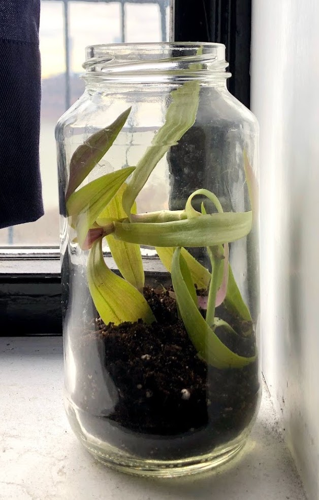

Lear R, Averill P, Carenzo C, Tao R, Glampson B, Leon-Villapalos C, Latchford R, Mayer E. Co-producing a safe mobility and falls informatics platform to drive meaningful quality improvement in the hospital setting: a mixed-methods protocol for the insightFall study. BMJ Open 2025;15:e082053
Tao R, Chillrud LG, Nunez Y, Rowland S, Boehme AK, Yan J, Goldsmith J, Wright J, Kioumourtzoglou M-A. Applying principal component pursuit to investigate the association between source-specific fine particulate matter and myocardial infarction hospitalizations in New York City. Environmental Epidemiology, 2023;7(2)e243.
Pereira-Eshraghi CF, Tao R, Chiuzan CC, Zhang Y, Shen W, Lerner JP, Oberfield SE, Sopher AB. Ovarian follicle count by magnetic resonance imaging is greater in adolescents and young adults with polycystic ovary syndrome than in controls. F&S Reports, 2022;3(2):102-109.
Weiner A, Cowell A, McMahon DJ, Tao R, Zitsman J, Oberfield SE, Fennoy I. The effects of adolescent laparoscopic adjustable gastric band sleeve gastrectomy on markers of bone health and bone turnover. Clinical Obesity, 2020.
Pereira-Eshraghi CF, Chiuzan C, Zhang Y, Tao RH, McCann M, Neugut D, Printz A, Fennoy I, Cree-Green M, Oberfied SE, Sopher AB. Obesity and insulin resistance, not polycystic ovary syndrome, are independent predictors of bone mineral density in adolescents and young women. Horm Res Paediatr, 2020; 1-7.
Baer TG, Agarwal S, Chen S, Chiuzan C, Sopher AB, Tao R, Hassoun A, Shane E, Fennoy I, Oberfield SE, Vuguin PM. Deficits in bone geometry in growth hormone-deficient prepubertal boys revealed by high-resolution peripheral quantitative computed tomography. Horm Res Paediatr, 2019;92(5)293-301.
Witchel SF, Burghard AC, Tao RH, Oberfield SE. The diagnosis and treatment of PCOS in adolescents: an update. Current Opinion 2019;31(4):562-569.
Oberfield SE, Tao R, Witchel SF. Present knowledge on the etiology and treatment of adrenarche. Pediatric Endocrinol Rev 2018;15(3):244-254.
Ibañez L, Oberfield SE, Witchel S, Auchus RJ, Chang RJ, Codner E, Dabadghao P, Darendeliler F, Elbarbary NS, Gambineri A, Garcia Rudaz C, Hoeger KM, López-Bermejo A, Ong K, Peña AS, Reinehr T, Santoro N, Tena-Sempere M, Tao R, Yildiz BO, Alkhayyat H, Deeb A, Joel D, Horikawa R, de Zegher F, Lee PA. An International Consortium Update: Pathophysiology, diagnosis, and treatment of polycystic ovarian syndrome in adolescence. Horm Res Paediatr, 2017;88(6):371-395.
Judge RK, Tao RH, Curteis TH. Accounting for the additional uncertainty following Rank-Preserving Structural Failure Time Model (RPSFTM) crossover adjustment in survival analysis: A SAGE approach. Value in Health 2025;28(12):S494.
Redig J, Heyne M, Dong W, Davidson MB, Dutta P, Pashley A, Michaels CJ, Tao R, Bajaj H. An adjusted indirect comparison of once-weekly insulin efsitora alfa vs. insulin icodec for adults with Type 2 Diabetes Mellitus previously treataed with basal insulin. Value in Health 2025;28(12):S42-S43.
Heyne M, Redig R, Bajaj H, Dong W, Dutta P, Pashley A, Michaels CJ, Tao R, Davidson MB. An adjusted indirect comparison of once-weekly insulin efsitora alfa vs. insulin icodec for adults with Type 2 Diabetes Mellitus previously treataed with basal-bolus insulin. Value in Health 2025;28(12):S43.
Tao RH. Pie Charts: Friend or Foe? Lightening Talk for R-Ladies NYC Meetup. October 2021. Virtual.
Tao RH, Nunez Y, Chillrud LG, Rowland ST, Boehme AK, Kioumourtzoglou M-A. Source-specific fine particulate matter and hospitalization due to myocardial infarction. Oral presentation for International Society of Environmental Epidemiology. August 2021. Virtual.
Tao R, Palmer M. Ecosystem Services from New York Green Roofs: Differences in water-use between plant species. Poster presentation for the Science Research Symposium at Columbia University. April 2016. New York, NY, USA.
Tao R. Opinion: A side effect of COVID-19 could be weaker civil liberties. City Limits, July 4, 2020.
Master Thesis, Department of Epidemiology, Mailman School of Public Health, Columbia University. Spring 2021: Investigating the association between source-specific fine particulate matter and hospitalization due to myocardial infarction in New York City
Senior Thesis, Department of Ecology, Evolution, and Environmental Biology, Columbia University. Fall 2015: Ecosystem services from New York green roofs: differences in water-use between plant species
